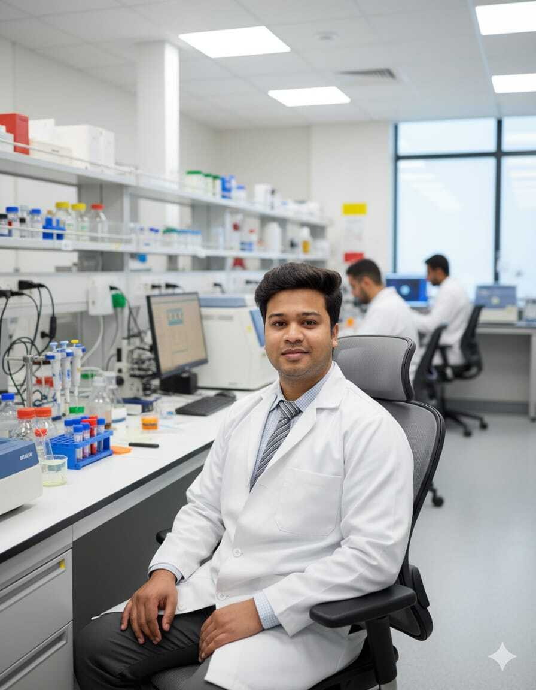

A research professional from Bangladesh with academic and practical experience in infection biology, molecular biology, immunology, and nutritional biochemistry. Currently working at the International Centre for Diarrhoeal Disease Research, Bangladesh (icddr,b).

Academic background and research journey
I am Ehsanul Kabir Sagar, a biochemistry and biotechnology graduate from Bangladesh, currently working as a Senior Research Assistant at the International Centre for Diarrhoeal Disease Research, Bangladesh (icddr,b).
I hold a Bachelor's degree in Biochemistry from Primeasia University, with a CGPA of 3.78/4.00, a Master's degree in Biotechnology from North South University, and a Diploma in Laboratory Medicine from Govt. Institute of Health Technology, Bogra, Bangladesh.
My research experience encompasses infection biology, molecular biology, immunological investigations, microbiological techniques, and nutritional biochemistry. My master's research focused on the infection and survival of mealworm and superworm larvae following exposure to different strains of Salmonella Typhi.
Through my professional experience at icddr,b, I have developed practical expertise in laboratory-based investigations, body composition analysis using FTIR spectrometer, immunological and molecular biology assays, and scientific manuscript preparation.
My long-term academic goal is to pursue doctoral research and contribute to advancing scientific knowledge in infectious diseases, host–pathogen interactions, molecular oncology and cancer research, with a broader focus on understanding the molecular mechanisms underlying human health and disease.
Scientific areas that motivate my research interests
Host-pathogen interactions, bacterial pathogenesis, pathogen-associated variation, and infectious disease mechanisms.
Molecular mechanisms of disease, microbial genetics, genomic analysis, and molecular characterization of biological systems.
Host immune responses, immunological mechanisms of infection, cellular immunity, and immune regulation.
Bacterial infection, microbial interactions, antimicrobial resistance, and pathogen characterization.
Nutritional status, infection-nutrition interactions, metabolic mechanisms, and nutrition-related health outcomes.
Whole-genome sequencing, molecular biomarkers, biological data analysis, and disease-associated molecular signatures.
Professional and academic research activities
Engaged in research activities involving immunological investigations (ELISA, MEEDAT, etc.), biological measurements, laboratory-based assays, and scientific manuscript writing-related work.
Investigated the infection and survival of mealworm and superworm larvae following infection with different strains of Salmonella Typhi. Research activities included bacterial culture, microbiological assays, and whole-genome sequencing data analysis using Galaxy tools.
Performed various laboratory tests, including biochemical and serological analyses, as well as a range of immunological assays.
Academic qualifications
North South University
Dhaka, Bangladesh
CGPA: 3.18/4.00 (86%)
Primeasia University
Dhaka, Bangladesh
CGPA: 3.78/4.00
Govt. Institute of Health Technology
Bogra, Bangladesh
Result: Pass (Merit)
Shathibari M.L. High School
Rangpur, Bangladesh
GPA 5.00/5.00 (A+)
Laboratory and research competencies
Peer-reviewed scientific contributions
Published in Frontiers in Cellular and Infection Microbiology .
A research contribution investigating the association between Escherichia coli pathotypes, fecal markers of enteropathy, and nutritional status among underweight adults in Bangladesh.
View Publication / DOI →Published in VeriXiv .
A research contribution investigating the effect of nutrition interventions, in moderately malnourished, acutely ill, African and Asian children aged 6-24 months.
View Publication / DOI →Published in IOSR Journal of Nursing and Health Science (IOSR-JNHS) .
A research contribution investigating the corelation of Vitamin D and Random Blood Sugar (RBS) in Bangladeshi population.
View Publication / DOI →Academic collaboration, research discussions, and PhD opportunities
I welcome opportunities to connect with researchers, academics, and prospective PhD supervisors working in infection biology, molecular biology, microbiology, immunology, and related biomedical research fields.